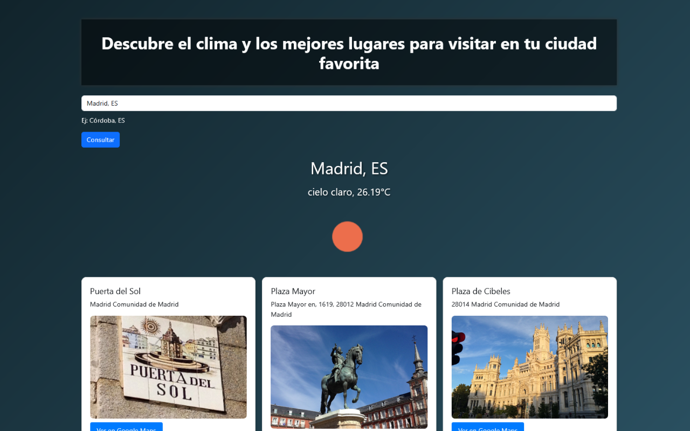
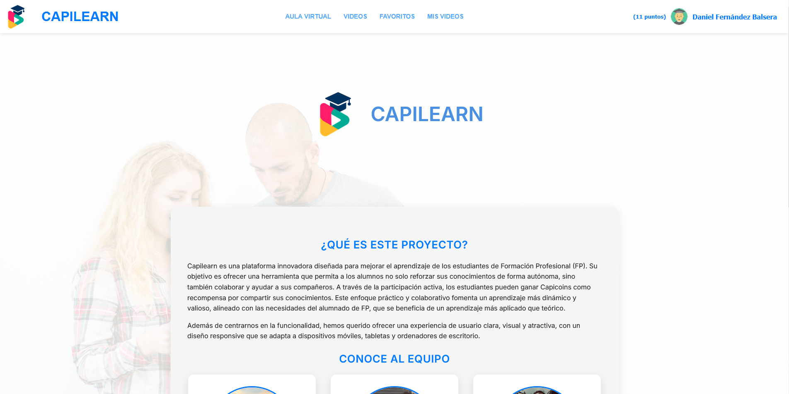
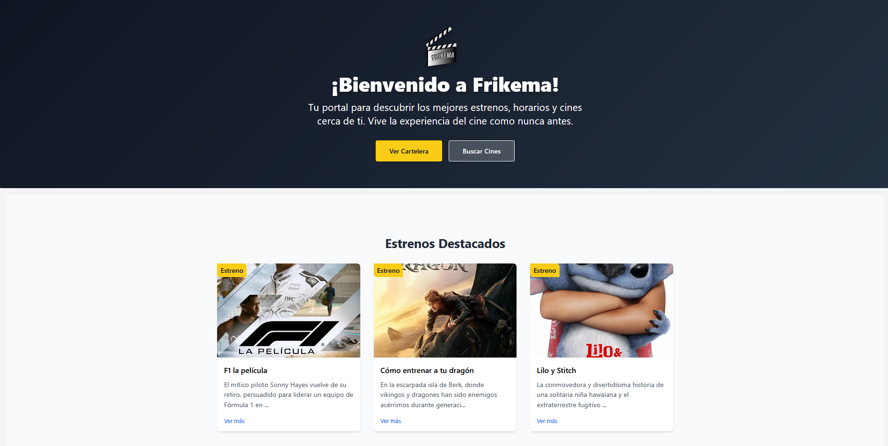
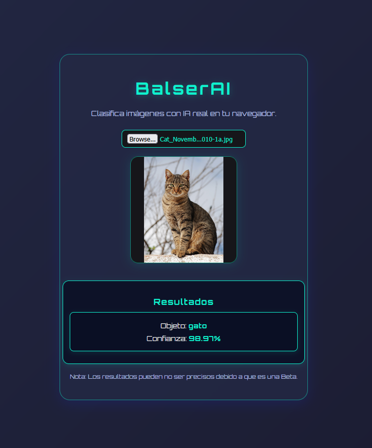

Hola, soy Daniel
Diseñador web & programador.
Combino diseño intuitivo con código limpio para crear experiencias web
funcionales y visualmente impactantes.
Sobre mí
Soy un diseñador web y programador apasionado por crear experiencias digitales modernas, funcionales y
estéticamente impactantes.
Me especializo en el desarrollo de interfaces limpias y eficientes, combinando creatividad con código para
dar vida a ideas únicas.
Tengo experiencia trabajando con HTML, CSS, JavaScript y frameworks modernos. Me gusta mantenerme
actualizado con las últimas
tendencias en diseño UI/UX y tecnologías web. Siempre busco soluciones que sean tanto visualmente atractivas
como técnicamente sólidas.
Actualmente me estoy especializando en inteligencia artificial (AI) y consultoría en AI, aplicando mis conocimientos de desarrollo web y
programación para crear soluciones innovadoras basadas en IA.
Proyectos Profesionales
Páginas web

Web Ecopy
Web corporativa desarrollada durante mis prácticas en Waricreative. Colaboré en diseño y la
maquetación utilizando WordPress, personalizando temas y plugins para adaptarlos a las necesidades
del cliente. El proyecto incluyó la optimización para SEO y la integración de funcionalidades
específicas solicitadas por la empresa.
Ver proyecto

Web mamás mágicas
Web corporativa desarrollada durante mis prácticas en Waricreative. Colaboré en diseño y la
maquetación utilizando WordPress, personalizando temas y plugins para adaptarlos a las necesidades
del cliente. El proyecto incluyó la optimización para SEO y la integración de funcionalidades
específicas solicitadas por la empresa.
Ver proyecto
Apps Web

Clima-Sites
Clima-Sites es una herramienta web interactiva que combina información meteorológica en tiempo real
con recomendaciones turísticas inteligentes. Diseñada para viajeros, curiosos o locales, permite
descubrir qué hacer en una ciudad en función del clima actual.
Ver proyecto

TFG: Capilearn
Capilearn es una plataforma de estudiantes desarrollada para el instituto IES Gran Capitán donde los
alumnos pueden subir contenido en forma de vídeo para ayudar a sus compañeros a estudiar.
Ver proyecto

Frikema
Frikema es una app web en la que puedes consultar los últimos estrenos del cine, así como ver
información sobre
películas de otros años y podrás consultar los cines más destacados de cada ciudad de andalucía.
Ver proyecto
Proyectos en progreso
BalserAI

BalserAI será una inteligencia artificial diseñada para traducir documentos y proporcionar información relevante al usuario de forma automática y eficiente.
Fecha estimada: 8-08-2025
Tecnologías / Habilidades Destacadas
Profesionales
WordPress (Avada)
WooCommerce
HTML5
CSS3
Javascript
Consultoría ERP
Odoo
php
React
Typescript
AI Consulting
Personales
Trabajo en equipo
Apoyo a compañeros
Resolución de problemas
Organización
Ganas de aprender
Experiencia Laboral
Waricreative · 2025
Diseñador web y gráfico en prácticas
- Creación de sitios web con WordPress, HTML, CSS y Avada
- Adaptación de plantillas y diseño responsive
- Diseño de mockups con Canva
Solar del Valle · 2023-2024
Consultor Odoo y Dpto. Software
- Coordinación del equipo de desarrollo
- Consultoría, análisis e implementación de Odoo
- Desarrollo de soluciones personalizadas
Konecta (Iberdrola) · 2023
Teleoperador
- Atención al cliente y resolución de incidencias
- Gestión de contratos y servicios energéticos
ICCA · 2023
Desarrollador Backend
- Desarrollo con C# y JavaScript
- Mantenimiento y actualización de servicios backend
Smalldev · 2023
Prácticas de consultor Odoo
- Personalización de módulos en Python y XML
- Pruebas funcionales y soporte a clientes
- Documentación de procesos
SIS Córdoba · 2021
Prácticas de Mantenimiento SI
- Instalación y configuración de impresoras
- Diagnóstico y resolución de incidencias
- Mantenimiento preventivo de equipos
STC Córdoba · 2019
Prácticas de técnico informático
- Mantenimiento y reparación de equipos
- Configuración de redes y sistemas operativos
- Soporte técnico a usuarios
Estudios
- 2024–2025 · Desarrollo de Aplicaciones Web · IES Gran Capitán
- 2021–2023 · Desarrollo de Aplicaciones Multiplataforma · CES Lope de
Vega
- 2019–2021 · Administración de Sistemas Informáticos en Red · CES
Lope de Vega
- 2017–2019 · Sistemas Microinformáticos y Redes · CES Lope de Vega
Sobre mí (Personal)
Soy una persona proactiva, organizada y con muchas ganas de seguir creciendo en el mundo del desarrollo web y software. Me considero curioso por naturaleza, lo que me lleva a investigar y aprender constantemente sobre nuevas tecnologías y tendencias del sector.
Disfruto trabajando en equipo, compartiendo conocimientos y apoyando a mis compañeros para alcanzar objetivos comunes. Valoro la comunicación clara y la colaboración como pilares fundamentales para el éxito de cualquier proyecto.
Fuera del ámbito profesional, me apasiona la música, el cine y la tecnología. Me gusta dedicar tiempo a mis hobbies, como tocar la guitarra, explorar nuevas herramientas digitales y participar en comunidades tecnológicas.
Mi objetivo es seguir desarrollándome tanto a nivel técnico como personal, aportando valor en cada proyecto y manteniendo siempre una actitud positiva y de aprendizaje continuo.
Descargar CV
Puedes descargar mi CV actualizado en formato PDF desde aquí:
Descargar CV